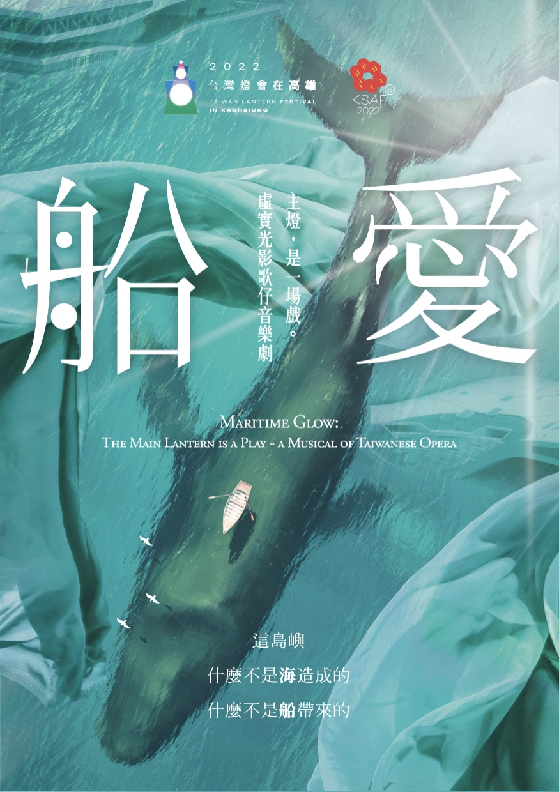
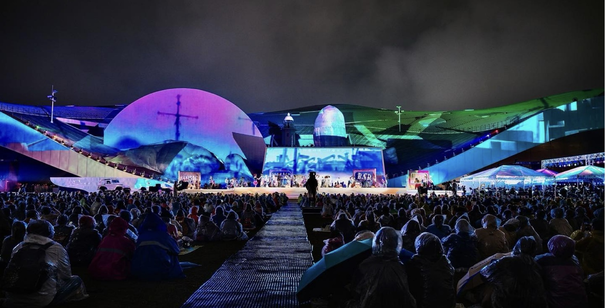
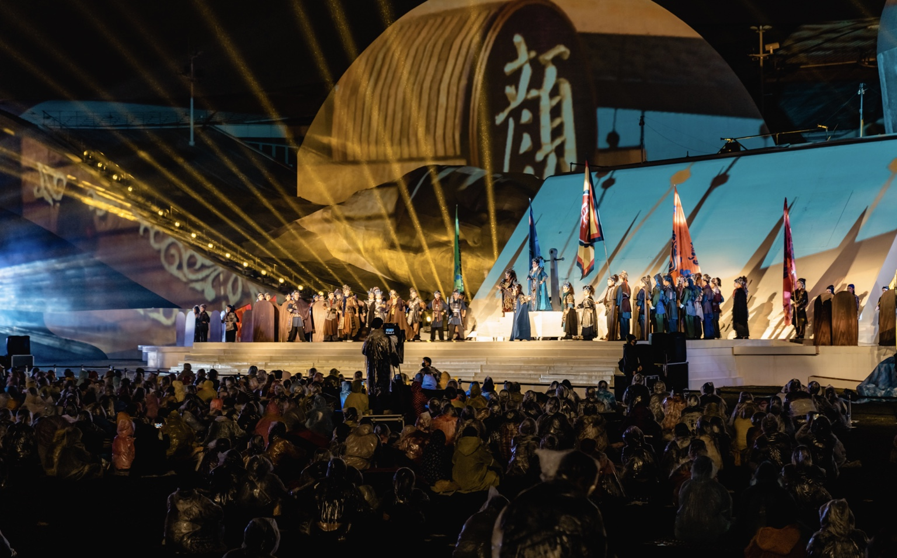
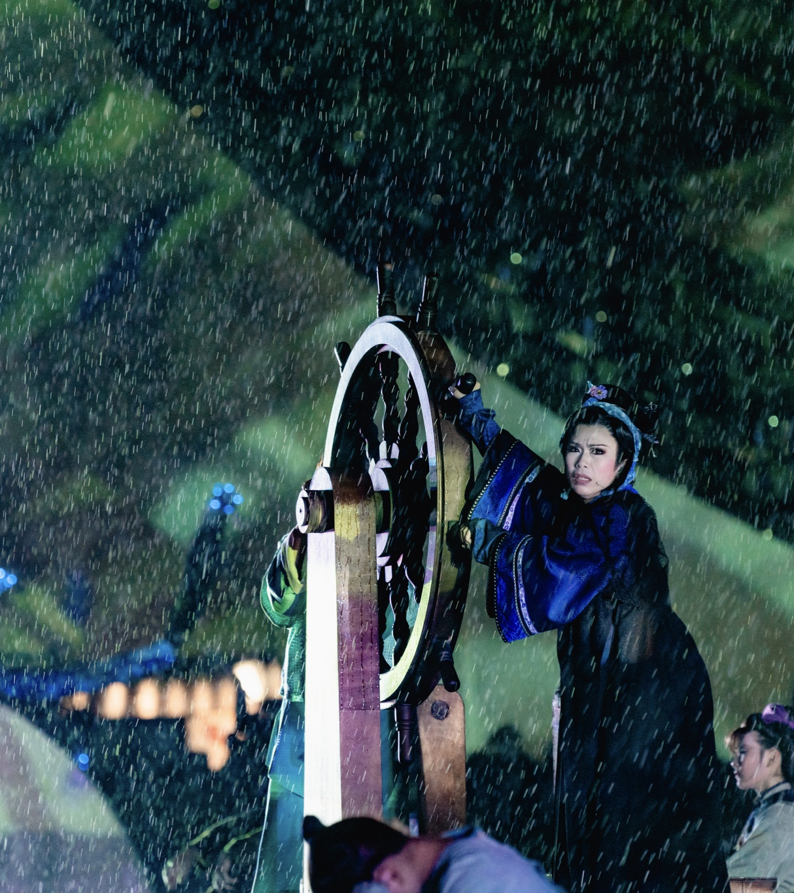

2022 · TAIWAN LANTERN FESTIVAL
《船愛》
臺灣燈會主燈大戲—虛實光影歌仔音樂劇

CREDITS
主燈，是一場戲。
以高雄在地歷史著筆，融合臺灣本土胡撇仔戲、台客搖滾以及原住民古調吟唱，仰望這片土地的傳說與神話。2022 年臺灣燈會首度集合十一團二校共同聯演，幕前幕後動員超過五百人次。
作品介紹
以1960年代的高雄做為開場，看港都人的海洋港口性格，如何用生命交織出幸福與愛。
那個時代，高雄港灣塞滿了廢船而動彈不得，「拆船」工業於是「被需要」的快速發展，成為臺灣揚名國際的驕傲，與島內重要建設起飛的依靠。可是在這片燦爛星火下的人生，總如同燈塔的光芒般，照映出故事百態：有前程似錦卻鬱不得志的少年，有光鮮亮麗卻為愛所苦的青春，有少不經事的輕狂，有對未來期待卻深陷險境的挑戰，也有甜蜜的愛戀。有人依海而生，也有人必須通過海的試煉，才能到達幸福的彼岸；千百年來，我們與這片海洋緊密相依。
舞台的另一頭，搬演著眾人的信仰與傳說。顏思齊與鄭芝龍的海上冒險、旗后燈塔百年故事，以及港都記憶中的大溝頂與酒吧街，在180度影像視角與戶外環境劇場之中交織成一段奇幻旅程。
演出劇照
PRODUCTION PHOTOS


製作團隊
CREATIVE TEAM音樂總監周以謙
編腔設計陳歆翰
作曲、編曲郭珍妤
燈光設計車克謙
影像設計徐逸君
舞台設計陳慧
服裝設計邱聖峰
舞蹈設計張雅婷
高空動作設計陳世倬
舞台監督吳沛穎
演出團隊
唐美雲歌仔戲團、臺灣豫劇團、明華園日字戲劇團、尚和歌仔戲劇團、勝秋戲劇團、春美歌劇團、明華園天字戲劇團、秀琴歌劇團、高雄市立左營高級中學舞蹈班、國立臺灣戲曲學院歌仔戲學系／京劇學系、高雄市國樂團、藍色狂想樂團、微行星男聲合唱團；特邀桑布伊、吉雷米。